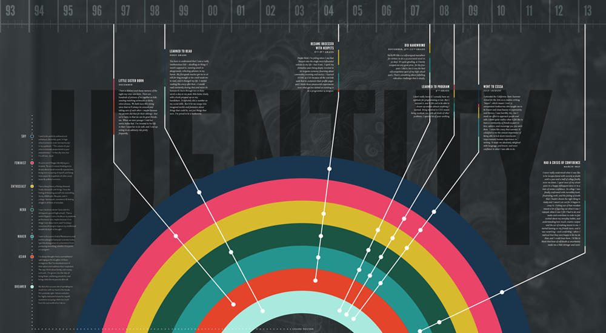
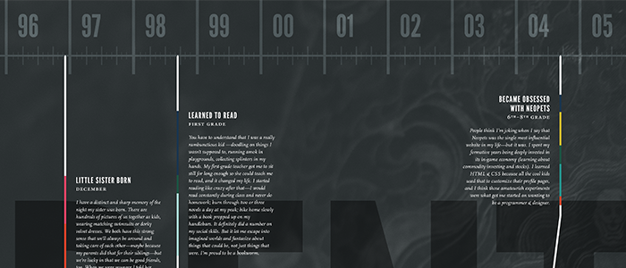
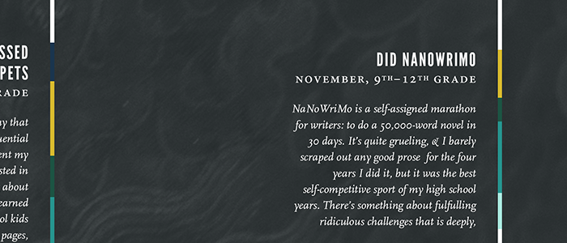
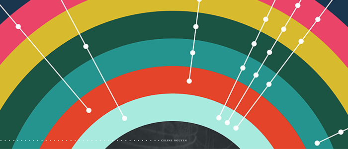
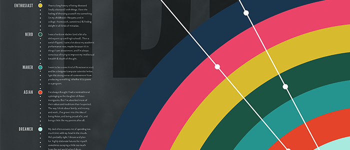

I designed a 36" by 20" self-portrait poster. The goal was to create an information visualization that wasn't dry and data-driven, but centered around storytelling and the complexities of identity.
This piece explores multidimensional ways of expressing information, and graphical representations to aid in storytelling. As a writer, I'm very interested in memoir; this piece is a memoir and reflection in the form of an infographic.

Stories are also color-coded by the parts of my identity they impacted. The color bands alongside each block of text provide a way to visually compare and contrast stories and their impact. Some experiences deeply affected my identity as a maker (teal), whereas some affected my identity as an inveterate, optimistic dreamer (light blue)

The stories are carefully typeset: the headings are set in League Gothic, the story text in Scala italic. The smallcap dates are in Minion Pro.

I chose to illustrate the different facets of my personality with deeply saturated bands of color representing a part of me: light blue, because I'm a dreamer; a vermilion red, to represent my Asian heritage and values. The bands are layered so the most apparent parts of my personality are on the outside, and the more subtle aspects are on the inside.

A key is provided to balance out the composition on the left, with a brief description (League Gothic and Mr. Eaves Sans) of each identity attribute I chose to tell stories about.
- Year Fall 2012
- For Typography studio